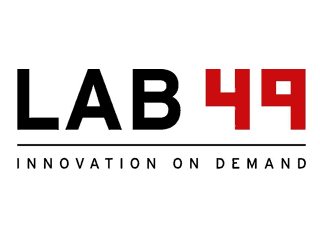

require('whoami');
-
Software Engineer at Microsoft.

-
Senior Consultant at Lab49.

require('enterprise');
To discuss enterprise Node.js we must first discuss enterprise software.
require('enterprise').concerns;
-
Lots of hands.
-
Workflow.
-
Core competency.
Bad decisions cost more money.
There are more decisions to make than the language.
require('decisions').list();
-
Source control.
-
Development tools.
-
Capacity.
-
Diversity.
Ok. Lets talk about Node.js
require('you').know(this) === true;
-
Node.js is server-side Javascript.
-
Node.js is asychronous evented I/O.
-
Node.js is very light-weight.
-
Node.js is a young project (~2.5 years)
require('development-focus');
-
Speed.
-
Decoupled kernels of functionality.
-
Experimentation.
-
Client-Server Isomorphism.
require('isomorphic');
Code is said to be Isomorphic if it is possible to execute its API both on the server and in a browser.
require('advantages');
-
No pre-defined rules.
-
Tons of libraries.
-
High visibility.
require('innovation');
-
socket.io http://github.com/learnboost/socket.io
Multi-transport (websocket, flash, xhr) full-duplex socket support backwards-compatible to IE6.
-
node-http-proxy http://github.com/nodejitsu/node-http-proxy
RFC2616-compliant reverse proxy supporting SSL, websockets and vhosts. Competitive speed with 1/10th the code of squid, haproxy, or nginx.
-
browserify http://github.com/substack/browserify
Seemless browser-side require() for raw JS and npm modules. (Dual-sided script loaders anyone?)
-
jsdom http://github.com/tmpvar/jsdom
A pure Javascript implementation of the W3C DOM.
-
hook.io http://github.com/hookio/hook.io
A universal event bus and process supervision tree with browser-support. Think: Erlang process model in Javascript at the application-level.
require('disadvantages');
-
No pre-defined rules.
-
Tons of libraries.
-
Everyone has an opinion.
-
User-land is still maturing.
We're working on it everyday. I promise.
require('express');
require('flatiron');
Build the best tools and the best systems will follow.
An initiative to build a collection of decoupled tools with the same standard of quality and performance that you would expect from anything built by Nodejitsu.
A full-stack web application development framework which packages these tools together to make isomorphic and stream-based application development easier.
require('flatiron').concerns;
-
Reusability / Portability.
-
Decoupling.
-
Extensibility.
-
Isomorphism.
require('questions').ask(Date.now);
require('open-source');
This presentation is Open Source software.
-
All software is available under the MIT license.
-
All content is available under Creative Commons Share-Alike no-attribution commercial ok.
-
Special thanks to Deck.js for making a killer open-source front-end: http://imakewebthings.github.com/deck.js
←
→
/
#